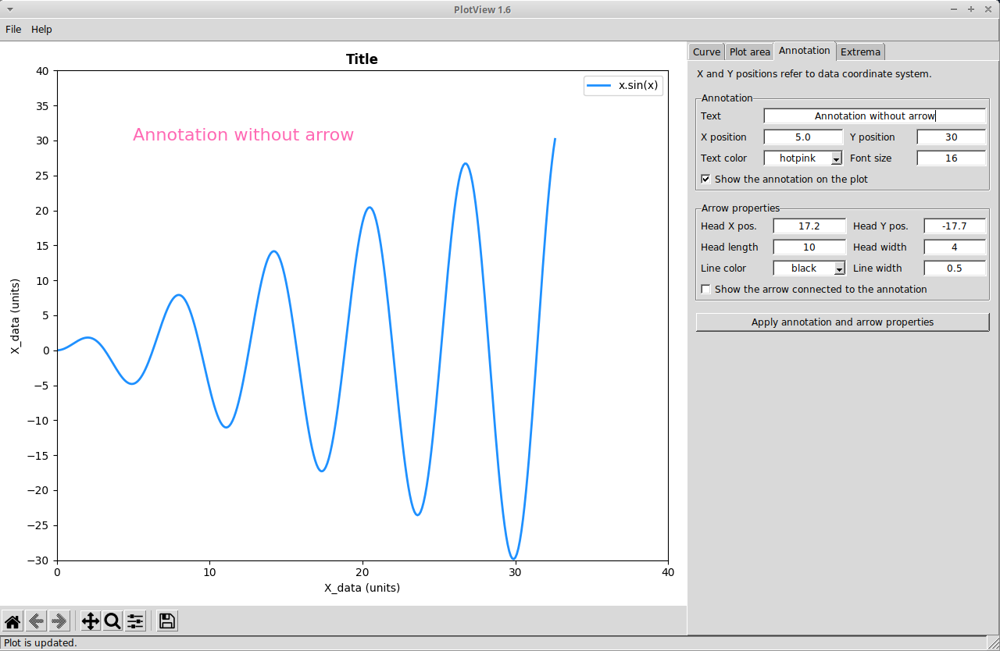
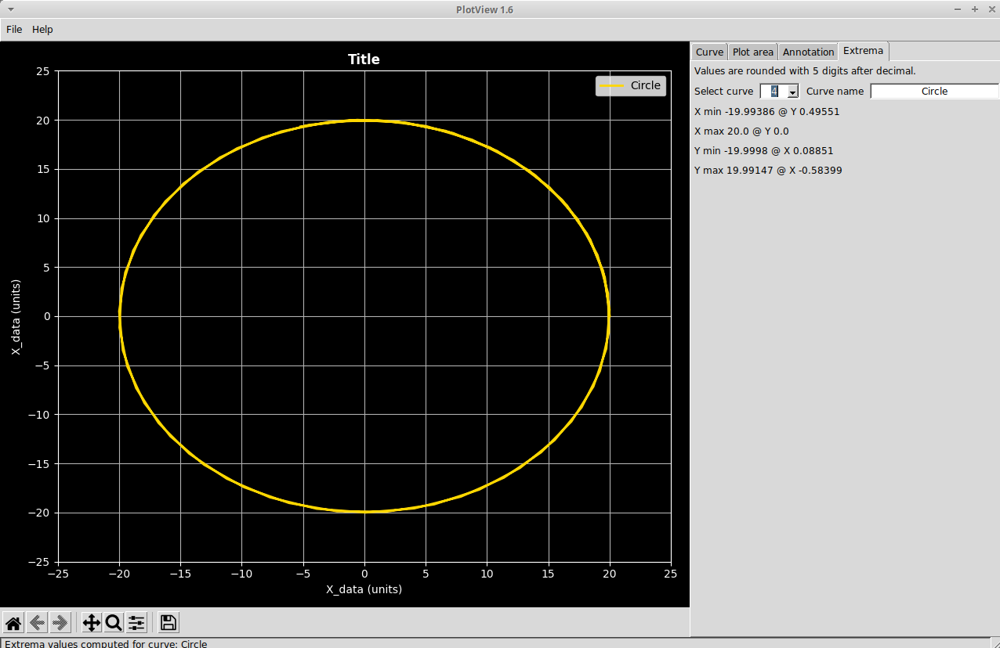

Welcome to PlotView help!
PlotView plots curves from CSV data file. It is licensed under GPL3. The appearance of curves (color, line width, etc.) can be customized and one annotation can also be added if you need to highlight a point of interest.
These HTML help files are located in the help directory, both in the local copy and in the Github repository.
Launch PlotView
After downloading and unzipping the source zip file, open a terminal in the directory of the file plotview.py. Then type: python3 plotview.py.
GUI: Graphical User Interface
The GUI was designed to be:
- simple to code!
- simple to use
- flow oriented: the order of widgets follows the order of operations

Main window
The main window is divided in 4 parts:
- menus on top
- plot area on the left: it is a matplotlib plot area embedded in the main window. The lower part is a matplotlib toolbar with panning, zooming and picture export fonctions.
- function area on the right: it is divided in tab panels which gather function link to 3 groups of functions:
- curve creation
- plot information
- annotations
- status bar at the bottom of the main window: a messages on performed operation, warnings, etc. are shown.
Menus
File / Load session allows to select a previously session file (*.pv). This restores curves, titles and annotation as they were at the moment of saving.
File / Save session saves a session file (*.pv) with curves, titles and annotation. It is recommended to save this file in the working directory. It is possible to edit this file yet it is not recommended to do so since the error processing is not coded (so any error or missing data will cause the application to raise an error).
Status bar
It is recommended to look at the status bar after each function to check the status of PlotView.
Curve tab
In the Create curve panel, the working dir. button selects the working directory allowing to process several files without losing time navigating in folders. At the right, the end of the working directory is shown.
The CSV file button selects the CSV file to be processed. At the right, the end of the selected CSV file name is shown.
The entry field allows to give a name to the curve before it is created. If you skip this entry field, the default name "Curve_label" will be given to the curve. this curve can be renamed after. Tip: double-click on the default name to replace it by a more relevant name.
The Create button create the plot of the selected CSV file with the entered curve name (if any). This plot also considers some default values for color, type of line, etc. These default values can be changed in the curve properties area just below. Each curve is referenced by a curve ID.
In the Curve properties panel, you can modify the properties of all created by first selecting the curve ID in the list and then modifying the properties. This also applies to the Show curve check button.
Below the name of curve (which can be changed here), there are 2 fields showing the X and Y data types. These types are the column titles of the related CSV file. You can edit these types and used them as a reminder of the data for the selected curve.
The type of line is chose through a drop down list: solid, dashed or dotted.
Next, you can offset and scale the X and Y data of the selected curve. Note that you can revert back these changes by resetting offset values to 0 and resetting scale values to 1.
Apply will update the plot with all the changes made for the selected curve. For example, if you want to change the color of all curves, you have to select the first curve, change the color and apply the change before selecting another curve and so on.
Plot area tab
The titles of plot, X label and Y label are defined by default and shown on the plot. Of course, they can be changed. Tip: double-click on the default title to replace it by a more relevant title.
The plot ranges for X and Y axis are automatically computed by matplotlib by default when Autoscale choice is selected. You can change these values by selecting User defined and input more appropriate values. The number of ticks for X an Y defines the number of intervals (range between 2 ticks) on the considered axis.
The legend position can be set in each of 4 corners of the plot area. Best lets matplotlib decide the position.
Show grid allows to trace grids on major axis values.
Apply all allows to take into accound all the modifications done in the Plot area tab to update the plot.
Annotation tab
It is possible to annotate in the plot area. This is usually to show a point of interest (change of slope on a curve, maxima, etc.).

The positions of annotation and the head of arrow are defined in the data coordinate system !
In the Annotation panel, enter the text of the annotation. Tip: double-click on the default text to replace it by a more relevant text.
Tick 'Show the annotation' to plot only the annotatation without the arrow.
In the Arrow properties panel, enter the position of the arrow head. You can change the arrow head length and widt to make it look more or less sharp.Tick 'Show the arrow connected to the annotation' to add the arrow. It is not possible to draw only the arrow.
Extrema tab
PlotView can compute the values of 4 extrema of the selected curve: X min, X max, Ymin, Y max. These values are rounded with 10 digits after decimal.

You just have to select the curve ID! Then the name of the curve is shown on the right entry field to make sure that you selected the intended curve and the extrema values are computed.
For X extrema, the Y value is also given as information (likewise X values are given for Y extrema).
If the selected was previously offset or scaled, then the extrema values will consider these modifications.